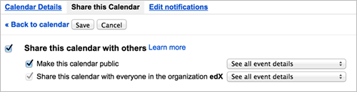

11.13. Google Calendar Tool#
Note
EdX offers provisional support for this tool.
This topic describes how to embed Google Calendars in your course.
Before you make content from an external site available through your course, be sure to review the content to ensure that it is accessible to people with disabilities. For more information, see Accessibility Best Practices for Developing Course Content.
You can also add Google Drive files, such as documents, spreadsheets, and images, to your course. For more information, see Google Drive Files Tool.
Note
Google services are not available in some regions and countries. If Google services are not available in a learner’s area, the learner might see an “image unavailable” message in the place of the Google Drive file or Google Calendar. EdX strongly suggests that you provide alternative resources for learners in these areas.
11.13.1. Overview#
You can embed a Google Calendar in your course so that learners see the calendar in the course body. You can use a Google Calendar to share quiz dates, office hours, or other schedules of interest to learners.
11.13.2. Embedding a Google Calendar in Your Course#
To embed a Google Calendar in your course, follow these steps.
11.13.2.1. Enable the Google Calendars Tool#
Before you can add Google Calendars to your course, you must enable the Google Calendars tool in Studio or OLX (open learning XML).
To enable the Google Calendars tool in Studio, you add the
"google-calendar" key to the Advanced Module List on the Advanced
Settings page. (Be sure to include the quotation marks around the key
value.) For more information, see Enabling Additional Exercises and Tools.
Alternatively, you can use OLX to enable the Google Calendars tool.
11.13.2.1.1. Enable Google Calendars in OLX#
To enable Google Calendars in your course, you edit the XML file that defines
the course structure. You locate the course element’s advanced-modules
attribute, and add the string google-calendar to it.
For example, the following XML code enables Google Calendars in a course. It also enables Google Drive files.
<course advanced_modules="["google-document",
"google-calendar"]" display_name="Sample Course"
start="2014-01-01T00:00:00Z">
...
</course>
For more information, see OLX Course Building Blocks in the EdX Open Learning XML Guide.
11.13.2.2. Make the Google Calendar Public and Obtain Its ID#
Before you can add a Google Calendar to your course, you must make the Calendar public and obtain its ID.
Important
The tasks described in this section rely on the use of third-party software. Because the software is subject to change by its owner, the steps provided here are intended as guidelines and not as an exact procedure.
11.13.2.2.1. Make the Google Calendar Public#
Open the Google Calendar.
From the Settings menu, select Settings.
Select the Calendars tab.
You might have multiple calendars on the Calendars tab. Find the calendar that you want to share in your course.
In the row for the calendar to share, in the Sharing column, select Edit Settings.
Select the Share this Calendar tab, and then select Make this calendar public.

Select Save.
The Calendar Settings page closes, and you return to the Calendars tab. You continue by obtaining the Google Calendar’s ID.
11.13.2.2.2. Obtain the Google Calendar ID#
On the Calendars tab, select the name of the calendar.
Select the Calendar Details tab.
Next to the Calendar Address label, look to the right of the three colored XML, ICAL, and HTML buttons. In parentheses, you can see the calendar ID.

The calendar ID resembles the following text.
abcdefghijklmnop1234567890@group.calendar.google.comSelect and copy the calendar ID. You use this value to configure the Google Calendar component in your course.
11.13.2.3. Add a Google Calendar in the Course Body#
To add a Google calendar in the course body, you create an advanced component in Studio or create a Google Calendar XBlock in OLX.
11.13.2.3.1. Add a Google Calendar Component in edX Studio#
Make sure that you enable Google Calendars for your course before you add a Google Calendar component.
To add a Google Calendar component, follow these steps.
On the Course Outline page, open the unit where you want to add the Google Calendar component.
Under Add New Component, select Advanced, and then select Google Calendar.
The new component is added to the unit, with the default edX Google Calendar embedded.
In the new component, select Edit.
In the Display Name field, type the name for the component.
In the Public Calendar ID field, paste the calendar ID you copied in the Obtain the Google Calendar ID task.
For the Default View field, select Month, Week, or Agenda.
This is the initial view that your learners have of the calendar. Each learner can change his or her view.
Select Save.
You can then Previewing Draft Content to see how the unit with the Google Calendar will appear to learners.
11.13.2.3.2. Add a Google Calendar XBlock in OLX#
To add a Google Calendar XBlock in OLX, create the google-calendar element.
You can embed this element in the vertical element, or you can embed this
element in its own file that is referenced within the vertical. For more
information, see OLX Course Building Blocks in the EdX Open
Learning XML Guide.
An example follows.
<google-calendar url_name="4115e717366045eaae7764b2e1f25e4c"
calendar_id="abcdefghijklmnop1234567890@group.calendar.google.com"
default_view="1" display_name="Class Schedule"/>
The value of the calendar_id attribute is the calendar ID that you copied
in the Obtain the Google Calendar ID task.
Note
The edX Learning Management System sets the height and width values for Google Calendars. If you add these attributes, the LMS overrides your changes.
11.13.3. Editing Google Calendars#
When you make changes to a Google Calendar that is embedded in your course, learners see the updates immediately. You make changes to calendars with the Google user interface. You do not need to edit the Google Calendar component.